Setting up SDL 2 on Visual Studio 2010 Ultimate
Last Updated 2/8/15
1)First thing you need to do is download SDL 2 headers and binaries. You will find them on the SDL website, specifically
on this page.
You'll want to download the visual c++ development libraries.
Open the zip archive and there should be a folder called SDL2-2.something.something. Copy the contents of the folder and put it anywhere you'd like. I recommend putting it in a folder that you dedicate to holding all your development libraries for Visual Studio. For these tutorials I'm putting them in a directory I created called C:\vs_dev_lib
2)Start up Visual Studio and create a new empty project.
3)Go to project properties.
4)Now we have to tell Visual C++ to search for header files in the SDL 2 include folder we just extracted. Under Configuration Properties in the VC++ Directories menu, select the Include Directories field, click the tiny down arrow button, and click edit.
5)Click the folder icon, and then click the button that pops up.
6)Now go find the SDL2 folders you extracted, and select the include folder and click OK.
7)Next we going to tell Visual C++ to search for library files in the SDL 2 library folder we just extracted. Select the Library Directories field, click the tiny down arrow button, and click edit.
8)Click the folder icon, and then click the button that pops up.
9)Now go find the lib folder you extracted, and select the lib folder where you find two folders. There's one for 32bit x86 architecture and for 64bit x64 architecture.
This is important: most compilers still compile 32bit binaries by default to maximize compatibility. We will be using the 32bit binaries for this tutorial set. It doesn't matter if you have a 64bit operating system, since we are compiling 32bit binaries we will be using the 32bit library. This means you need to select the x86 folder and click ok. Now Visual Studio knows where to find the library files. If you get an error how the linker can't find SDL2.lib, it means you missed this step.
10)In order to compile SDL code, we have to tell the Visual C++ to link against the libraries. Go under Linker in the Input menu, edit the additional dependencies.
11)Now paste
SDL2.lib;
12)Under Linker in the System menu, set the subsystem.
13)When our SDL 2 application runs, the operating system needs to be able to find the dll file.
Go find the SDL 2 lib folder you extracted and copy SDL2.dll and put it either your project's working directory (where the vcxproj file is at), or inside of the system directory. C:\WINDOWS\SYSTEM32 is the 32bit windows system directory and C:\Windows\SysWOW64 is the 64bit system directory of 32bit applications. For these tutorials, I'm assuming we're making 32bit applications.
14)Now go download the source for lesson 01. Add the source file inside to your project.
Now build. If there are any errors, make sure you didn't skip a step.
Now that you have SDL 2 compiling, it's time to go onto part 2 of the tutorial.
You'll want to download the visual c++ development libraries.
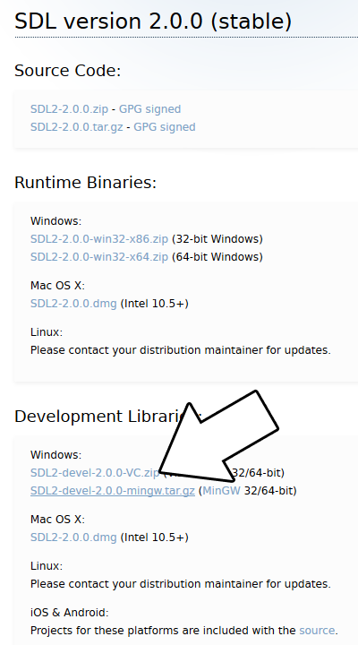
Open the zip archive and there should be a folder called SDL2-2.something.something. Copy the contents of the folder and put it anywhere you'd like. I recommend putting it in a folder that you dedicate to holding all your development libraries for Visual Studio. For these tutorials I'm putting them in a directory I created called C:\vs_dev_lib
2)Start up Visual Studio and create a new empty project.
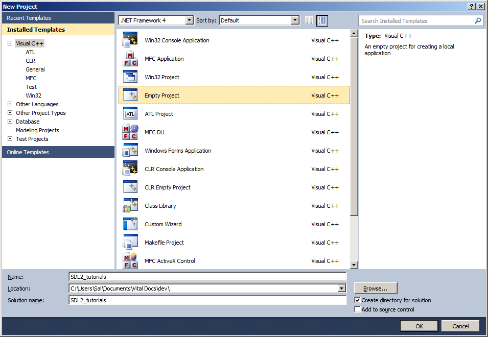
3)Go to project properties.
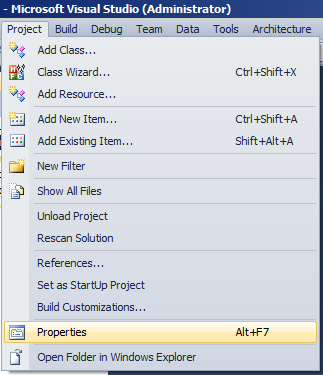
4)Now we have to tell Visual C++ to search for header files in the SDL 2 include folder we just extracted. Under Configuration Properties in the VC++ Directories menu, select the Include Directories field, click the tiny down arrow button, and click edit.
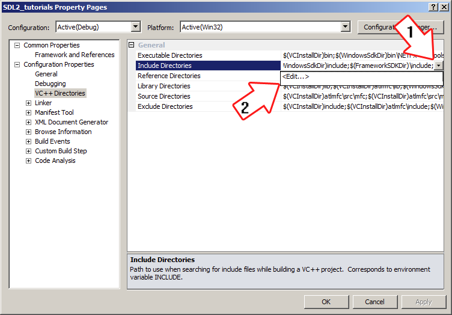
5)Click the folder icon, and then click the button that pops up.
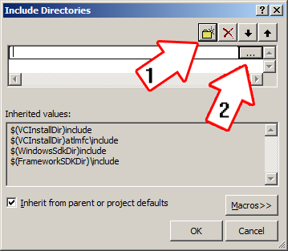
6)Now go find the SDL2 folders you extracted, and select the include folder and click OK.
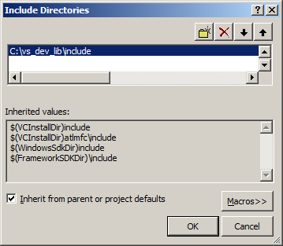
Now Visual Studio knows where to find the header files. If you get an error that the compiler can't find SDL.h, it means you messed up this step.7)Next we going to tell Visual C++ to search for library files in the SDL 2 library folder we just extracted. Select the Library Directories field, click the tiny down arrow button, and click edit.
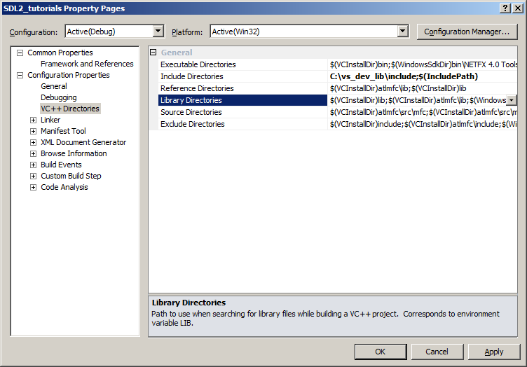
8)Click the folder icon, and then click the button that pops up.
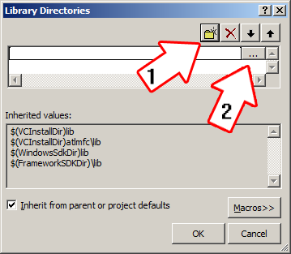
9)Now go find the lib folder you extracted, and select the lib folder where you find two folders. There's one for 32bit x86 architecture and for 64bit x64 architecture.
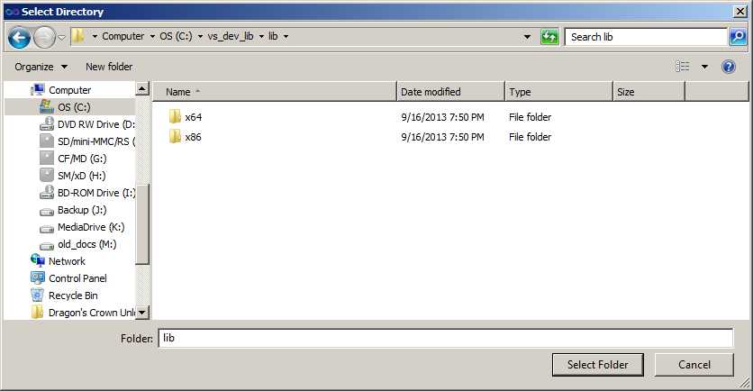
This is important: most compilers still compile 32bit binaries by default to maximize compatibility. We will be using the 32bit binaries for this tutorial set. It doesn't matter if you have a 64bit operating system, since we are compiling 32bit binaries we will be using the 32bit library. This means you need to select the x86 folder and click ok. Now Visual Studio knows where to find the library files. If you get an error how the linker can't find SDL2.lib, it means you missed this step.
10)In order to compile SDL code, we have to tell the Visual C++ to link against the libraries. Go under Linker in the Input menu, edit the additional dependencies.
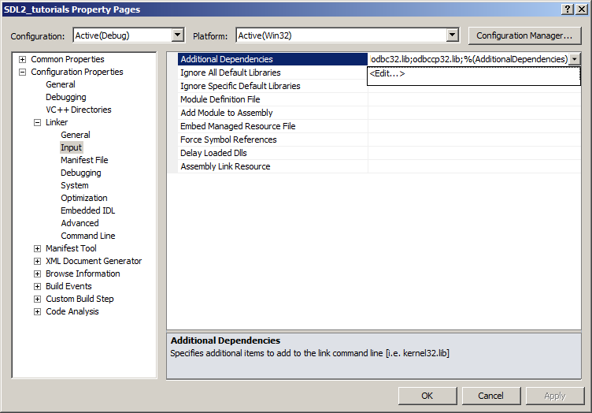
11)Now paste
SDL2.lib;
SDL2main.lib;
into the Additional dependencies field and click OK.
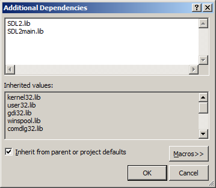
Now Visual Studio knows to link against SDL 2. If you get a bunch of undefined reference error after compiling, it means you messed up this step.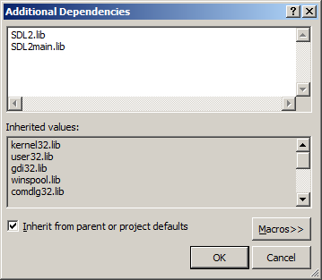
12)Under Linker in the System menu, set the subsystem.
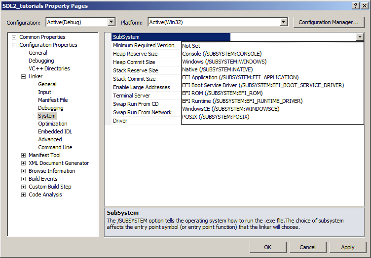
You can set it to Windows if you don't want console output, and Console if you do want console output. For this tutorial set, errors will be printed
on the console, so I recommend leaving it as a console application as you are still learning and prototyping. If you get an error about an entry point not being
defined or unresolved external symbol _main it means you skipped this step.13)When our SDL 2 application runs, the operating system needs to be able to find the dll file.
Go find the SDL 2 lib folder you extracted and copy SDL2.dll and put it either your project's working directory (where the vcxproj file is at), or inside of the system directory. C:\WINDOWS\SYSTEM32 is the 32bit windows system directory and C:\Windows\SysWOW64 is the 64bit system directory of 32bit applications. For these tutorials, I'm assuming we're making 32bit applications.
14)Now go download the source for lesson 01. Add the source file inside to your project.
Now build. If there are any errors, make sure you didn't skip a step.
Now that you have SDL 2 compiling, it's time to go onto part 2 of the tutorial.